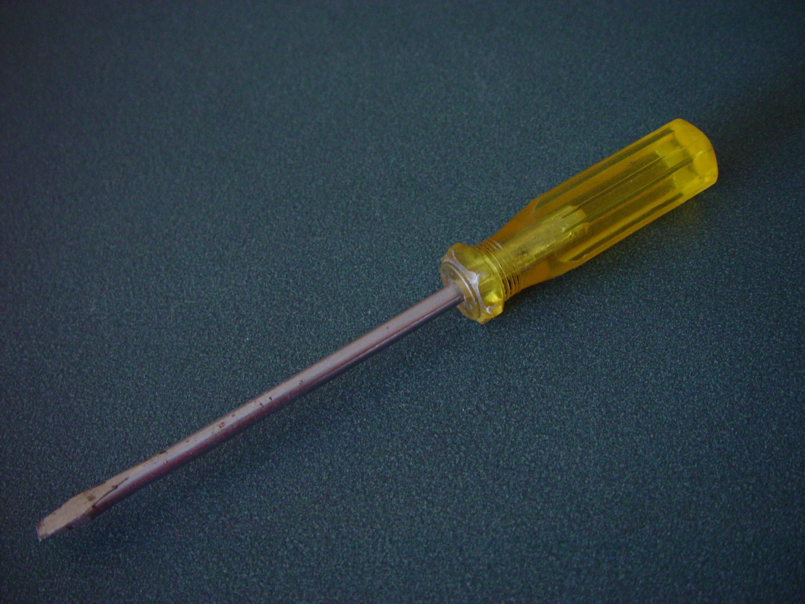
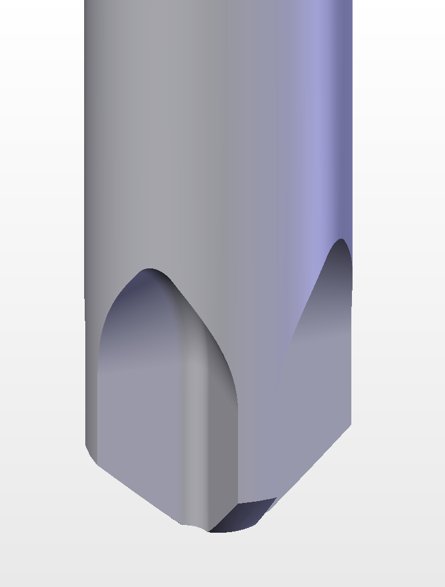
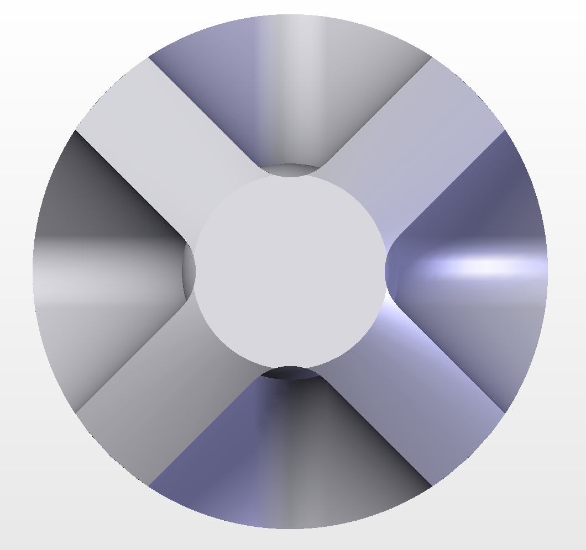

Tipps, Vergleich & Wissen rund um Schraubenzieher
Dieser Schraubenzieher-Tipp gibt Ihnen einen Überblick über die verschiedenen Schraubenzieher-Typen und zeigt ein häufiges Problem: Kreuzschlitzspitzen mit nur 3 von 4 Zacken — ein Zeichen von Verschleiß oder schlechter Fertigungsqualität.
Der Phillips-Kreuzschlitz wurde 1936 von Henry F. Phillips patentiert. Die Kreuzform erlaubt es, den Schraubenzieher besser zu zentrieren als beim Schlitzschraubenzieher und mehr Drehmoment zu übertragen. Allerdings neigt die Spitze bei Verschleiß zum "Durchdrehen" (Cam-out), was Schraubenköpfe zerstören kann.

Der älteste und einfachste Typ. Flacher Schlitz im Schraubenkopf, passend zum Schraubenzieher.

Kreuzförmige Spitze für bessere Zentrierung und höheres Drehmoment. Größen: PH00, PH0, PH1, PH2, PH3.

Weiterentwicklung von Phillips mit zusätzlichen Rippen. Bessere Kraftübertragung, kein Cam-out.
| Typ | Bezeichnung | Beschreibung |
|---|---|---|
| ⬡ Innensechskant (Inbus/Hex) | Hex | Sechskantiger Einsatz, häufig bei Möbeln (IKEA) und Fahrrädern. |
| ✦ Torx (TX) | TX / T-Star | Sechszack-Stern, sehr gute Kraftübertragung, kein Cam-out. Häufig bei Autos und Elektronik. |
| ⊞ JIS (Japanese Industrial Standard) | JIS | |
| ⊕ Robertson (Square) | sq | Viereckiger Einsatz, in Kanada weit verbreitet. Sehr guter Halt, wenig Durchdrehen. |
| ⬢ Tri-Wing | TW | Dreizack, vor allem bei Nintendo-Geräten und Flugzeugen. |
Ein intakter Phillips-Kreuzschlitz hat 4 Zacken (plus einen kleinen Spalt dazwischen). Wenn eine Spitze abgenutzt ist oder mangelhaft gefertigt wurde, kann es vorkommen, dass eine Zacke fehlt oder verschlissen ist — es bleiben nur noch 3 übrig.
| Problem | Folge | Schweregrad |
|---|---|---|
| Cam-out (Durchdrehen) | Schraubenkopf wird beschädigt, Schraube lässt sich nicht mehr lösen | Hoch |
| Ungleichmäßige Kraftübertragung | Schraube wird nicht fest genug angezogen | Hoch |
| Weggleiten des Werkzeugs | Gefahr der Verletzung, Kratzer am Werkstück | Hoch |
| Korrosionsbeschleunigung | Abriebpartikel fördern Rostbildung | Mittel |
| Eigenschaft | Phillips (PH) | Pozidriv (PZ) | Torx (TX) |
|---|---|---|---|
| Form | Kreuz mit 4 Zacken | Kreuz + 4 Zusatzrippen | 6-zackiger Stern |
| Entwicklung | 1936 von H.F. Phillips | 1960er Jahre | 1967 von Camcar Textron |
| Cam-out | Ja (gewollt bei Überlast) | Sehr gering | Nein |
| Drehmoment | Mittel | Hoch | Sehr hoch |
| Häufigkeit | Sehr hoch (Standard) | Hoch (Holz/Möbel) | Mittel (Auto/Elektronik) |
| Empfohlen für | Alltagsgebrauch | Möbelbau, Holz | Präzision, Autos |
| Größe | Spittdurchmesser | Anwendung |
|---|---|---|
| PH00 | ~1 mm | Elektronik, Uhren, kleine Geräte |
| PH0 | ~1.5 mm | Kleingeräte, Brillen, Modelle |
| PH1 | ~2.5 mm | Haushalt, leichte Elektronik |
| PH2 | ~4 mm | Standard, Möbel, Autos (häufigste Größe) |
| PH3 | ~6 mm | Schwere Konstruktionen, Traktoren |
Der Phillips-Bit sollte ohne Spiel in den Schraubenkopf passen. Wenn er wackelt, ist er zu klein — das zerstört den Schraubenkopf!
Bei Phillips-Schrauben immer einen starken Axialdruck ausüben, während Sie drehen. Das verhindert das "Durchdrehen" und verlängert die Lebensdauer von Bit und Schraube.
Halten Sie den Schraubenzieher gegen das Licht. Eine intakte Spitze hat scharfe, gerade Kanten. Abgerundete oder fehlende Zacken = austauschen!
Wenn Sie viel schrauben müssen, investieren Sie in Torx-Werkzeuge. Sie bieten die beste Kraftübertragung, kein Cam-out, und die Bits verschleißen kaum.
Wenn ein Schraubenkopf bereits beschädigt ist, hilft manchmal: